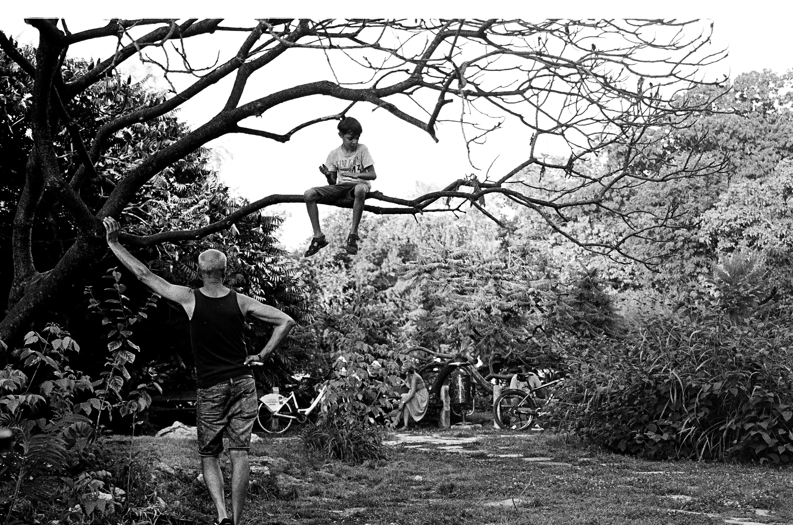

- 심심할때 추천 하는 게임
- 그냥 할 게 없을 때
- 집에서 할게 없을때
그냥 할게 없을때
음... 그냥 할게 없을때 뭘하는지 아십니까...?
1.책을 읽기

솔직히 책이 읽기가 싫죠?ㅋㅋ 그럴 수 있습니다 그럴땐 일단 도전해보세요 그냥 집에서 굴러다니는 만화책이나
동화책 혹은 긴책같은거 있죠? 있다고 칩시다 그러면 그냥 일딴 30페이지까진 읽어보세요 그렇게 읽다간
푹~ 빠지게 될것입니다 만약 안빠지시면..... 그냥 책이랑 담쌓고 있는 사이네요 ㅋㅋㅋㅋㅋㅋ 그렇다면 밑으로 고우고우
2.생활코딩 배우기!
생활코딩은 요기로 가면 됩니다
제가 만든 이 기초적인 웹도 생활코딩 webn에 html internet이라고 되있는 곳에서 배웠습니다
제가 이 웹을 만들걸 보시면 생활코딩에서 댓글달면 친구가 될 상상을 했지만 제가 계정을 까먹어서;;;;
물론 생활코딩은 계정없이 공부하셔도 됩니다! 제가 강추하겠죠 만약 컴퓨터가 없으시다고요? 그럼 이 웹도 어떻게 들어왔을 까요~~?
3.근처에 놀러가기!

좀 흑백이라 그런가요? 그럼 이걸루!

크큭 재밌게 놀고있는 아이의 모습이 보이나요? 이처럼 근처를 둘러보세요!
여러분이 초딩 저학년일 경우는 놀이터에 가서 친구들을 불러보세요!
그리고 여름이면 술잡 등으로 놀고 가을이면 낙엽으로 새로운 놀이를 만들어 보세요!
전 3학년때 친구들과 같이 500원짜리 동전을 숨기고 찾는 놀이를 했습니다!
가지는 사람 임자라고 했는데 저도 기억이 안나구 친구들도 못찾아서 날렸습니다 ㅋㅋ
이런 일이 발생 할 수 있으니 돈으로는 하지말고 잃어버려도 괜찮은거 예를 들면 길에서 주운 돌, 깨끗한 쓰레기 등등
주운걸로 놀아도 됩니다! 아무리 그래도 생각이 안난다구요? 그럼 방법이 없네여.... 이곳으로 들어가시면
괜찮은 답을 얻으실 거에요 아니면 제 웹사이트를 구경하시든가.....
수정 날짜:2019-02-11월요일!
전이만 뿅!